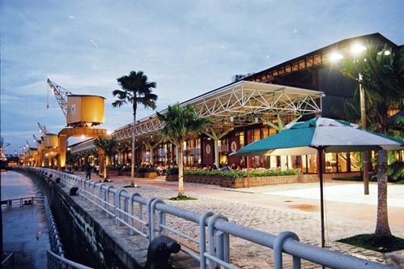
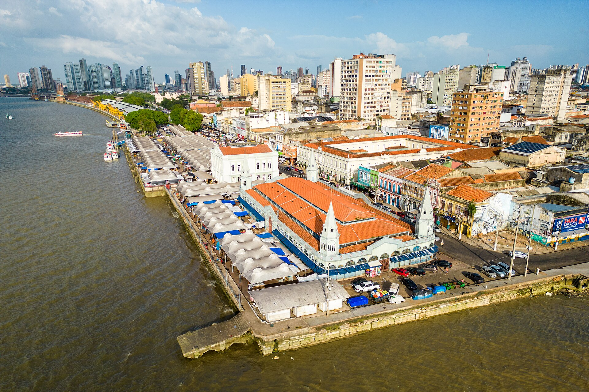
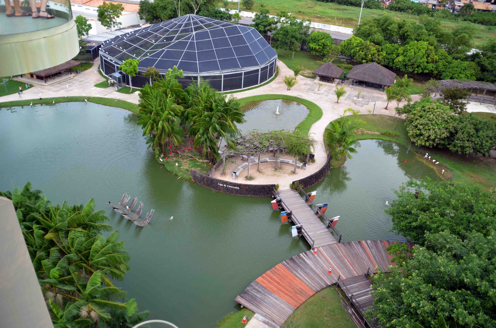
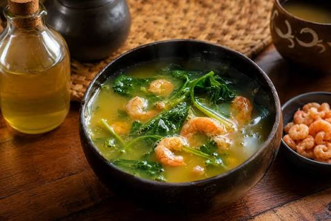
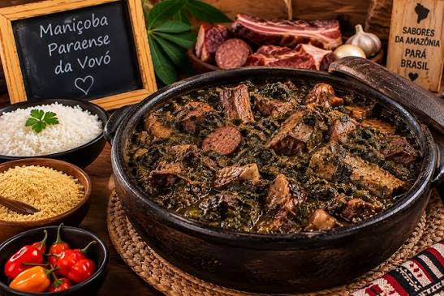
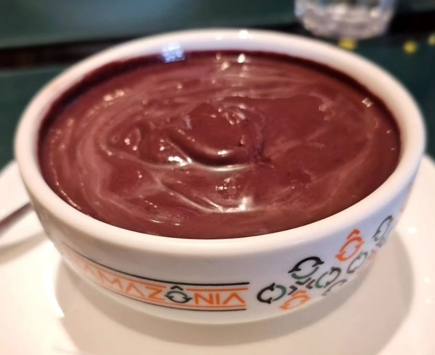
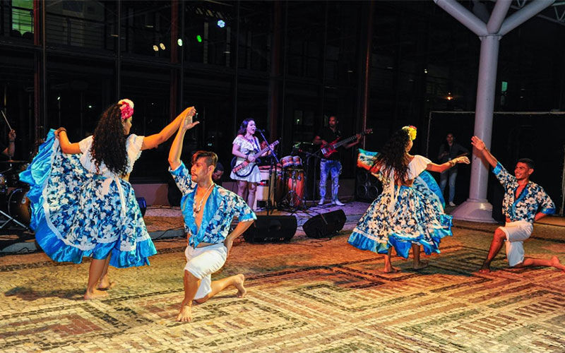
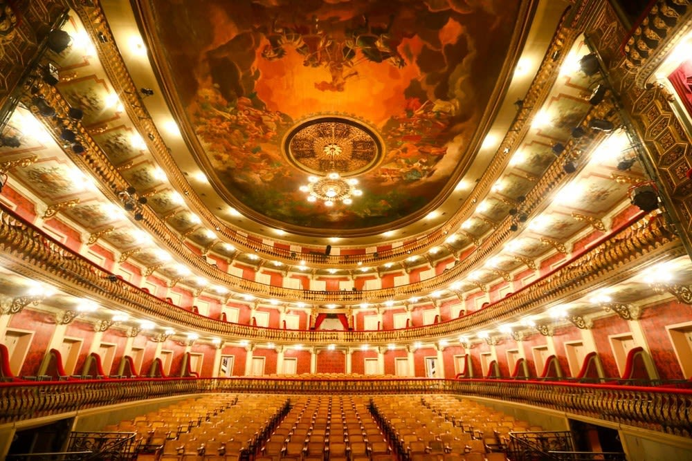
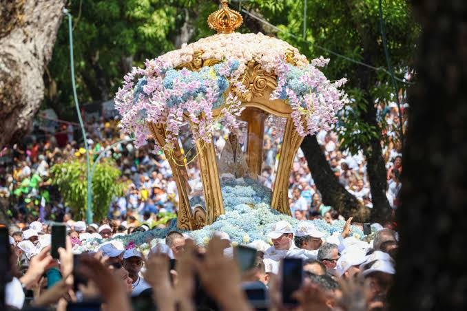

A CAPITAL DA AMAZÔNIA
Descubra Belém
de um jeito diferente.
Explore os encantos, sabores e cultura da capital paraense. Viva experiências únicas e descubra Belém por novos caminhos.
Explorar BelémExplore Belém
Descubra os principais pontos turísticos, paisagens e experiências que fazem Belém ser única.

Estação das Docas
Um dos principais espaços de lazer, gastronomia e cultura de Belém, com uma bela vista para a Baía do Guajará.

Ver-o-Peso
Conheça um dos mercados mais tradicionais da cidade, repleto de sabores, aromas e cultura amazônica.

Mangal das Garças
Um espaço que reúne natureza, tranquilidade e a beleza da fauna e flora amazônica.
Sabores de Belém
Descubra os sabores únicos da culinária paraense e conheça um pouco da riqueza gastronômica da Amazônia.

Tacacá
Uma tradicional iguaria amazônica preparada com tucupi, goma, jambu e camarão, conhecida por seus sabores marcantes.

Maniçoba
Um prato tradicional paraense feito com folhas de mandioca, cozidas por vários dias, e acompanhadas de diversos ingredientes.

Açaí Paraense
Parte da tradição amazônica, apreciado em Belém de maneira característica, frequentemente acompanhado de peixe ou farinha.
Cultura e Identidade
Conheça as tradições, manifestações culturais e a riqueza histórica que fazem parte da identidade de Belém.

Tradições Paraenses
Conheça as manifestações populares, tradições e costumes que preservam a identidade cultural da região.

Patrimônio Histórico
Explore a arquitetura, os monumentos e os espaços históricos que contam a trajetória de Belém.

Festas e Celebrações
Vivencie celebrações e eventos que reúnem fé, cultura, tradição e a participação do povo paraense.